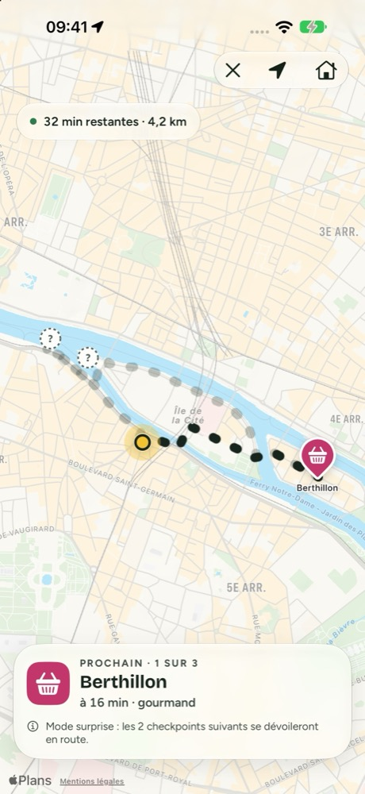
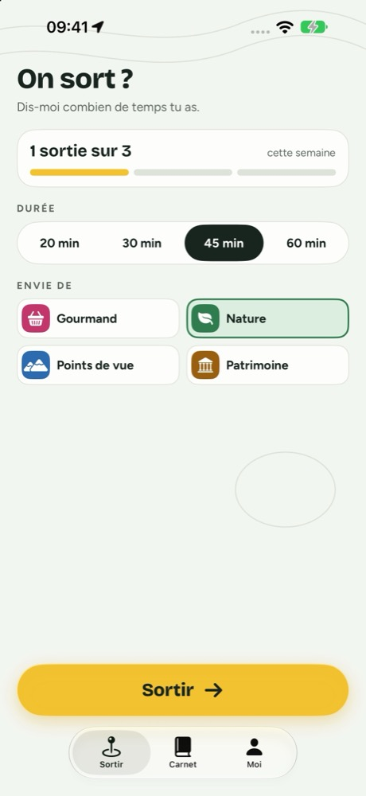
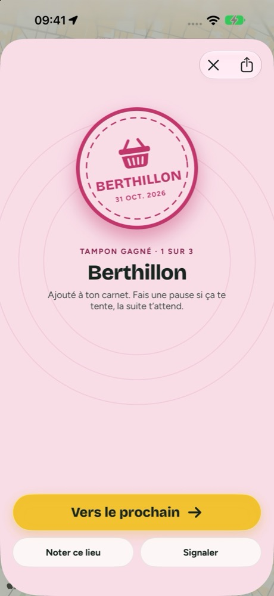
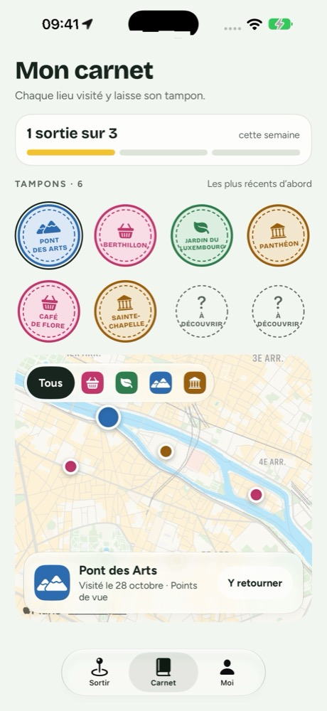

Détour
Dis-moi combien de temps tu as, je te donne une bonne raison de sortir marcher.
Pour iPhone, iPad et iPhone Duo · Gratuit, avec Détour+ en option

Trois choix, et tu es dehors.
Détour ne te dit pas comment aller de A à B. Il te donne une raison d’y aller, et te ramène chez toi.
Ta durée
20, 30, 45 minutes ou plus. La boucle part de là où tu es et y revient.
Ton envie
Gourmand, nature, points de vue ou patrimoine : 2 à 4 vrais lieux à atteindre en chemin.
Sortir
Suis le tracé. Chaque lieu atteint se valide tout seul et laisse un tampon dans ton carnet.
Des prétextes à marcher, pas des visites.
Une balade en quatre écrans.



Fermé dans la main, ouvert sur la carte.
- Fermé, l’essentiel tient sur l’écran externe : la durée, l’envie, et « Sortir ».
- Ouvert, les réglages d’un côté, la boucle qui se dessine de l’autre.
- Mode surprise : les lieux suivants se dévoilent en route.
- Objectif de la semaine, badges, et chaque sortie enregistrée dans Apple Santé si tu le souhaites.

Gratuit pour prendre l’habitude. Détour+ pour aller plus loin.
Sorties illimitées, les quatre envies, des boucles jusqu’à 90 minutes avec dénivelé et terrain sur mesure, et le mode surprise.
Annuel
19,99 €par an, soit 1,67 € par mois
Mensuel
2,99 €par mois, sans engagement
À vie
39,99 €un seul achat, pour toujours
Gratuit : 3 sorties par semaine, les envies Nature et Gourmand, jusqu’à 45 minutes, le carnet et les badges. Prix en France, taxes incluses. Les abonnements se gèrent et se résilient dans les réglages de ton compte Apple.
Ta balade te regarde.
Rien à créer, rien à retenir. Ton carnet reste sur ton iPhone.
Elle sert à tracer la boucle et valider les lieux, pendant la sortie uniquement.
Aucun traceur publicitaire. Le détail est dans la politique de confidentialité.